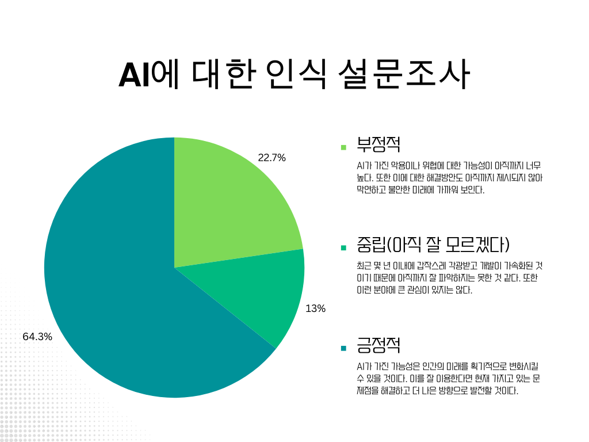

생성형 AI 특강을 들은 이후, 주변인들의 AI에 대한 인식이 궁금해져 설문조사를 실행하였다.
오송고 학생을 비롯한 타학교의 고등학생 약 62명을 대상으로 한 설문조사에서 과반수의 학생들이 AI를 긍정적이라 인식하고 있음을 확인할 수 있었다. 그 이유를 미디어에서 AI를 다루는 방식에 있다고 생각하여 과거와 현재의 미디어 속 AI의 모습을 확인하는 활동을 진행하였다.

[스페이스 오디세이(1968)], [터미네이터(1984)], [매트릭스(1999)], [월 E(2008)], [Her(2013)] 마지막으로 로봇의 3원칙이 최초로 등장한 소설 [아이, 로봇(1940~1950)]을 차례대로 감상하고 미디어 속에서 등장하는 AI(또는 인공적으로 생성된 지능적 존재)가 어떤 방식으로 이미지가 변화해왔는지 탐구했다. 과거에는 인공지능이 인간을 뛰어넘는 지능을 바탕으로 반기를 들어 인류를 말살하려는 이미지가 주였던 반면, 21세기에 들어오며 AI는 인간에게 친숙하고 친근한 존재로 그려지기 시작했다. 더불어 '도구' 혹은 '노예'가 아니라 삶의 동반자로 여겨지기도 하며 사람들에게 AI에 대한 긍정적이고 친숙한 이미지를 조성하는 데 큰 역할을 하였다. 마지막으로 이 탐구 내용을 바탕으로 위에 나오는 타임라인을 직접 제작하였다.
하지만 AI가 항상 긍정적이고 좋은 방향으로만 사용되지 않고, 실제 현실에서도 그러기 때문에 미디어 속에서 등장하는 '경고'의 부분도 함께 첨부함으로써 정보 전달에서 중립을 지키려 하였다.